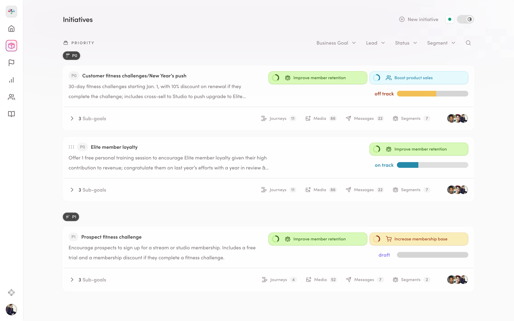
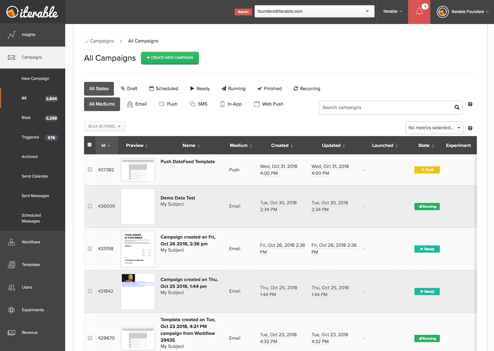
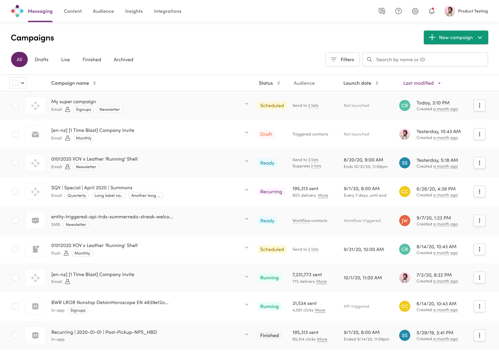
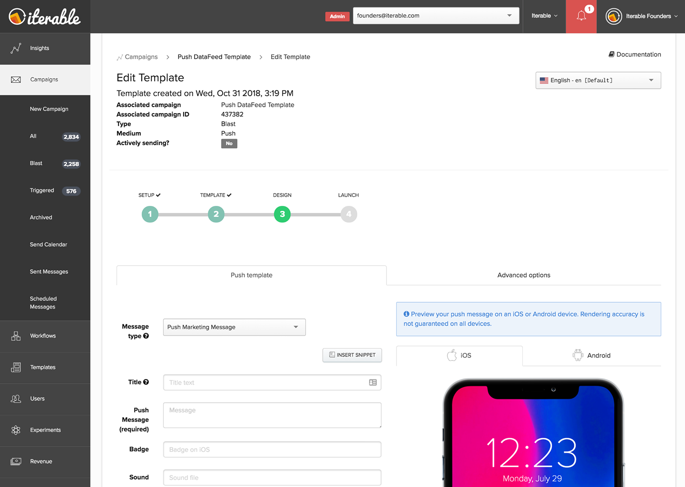
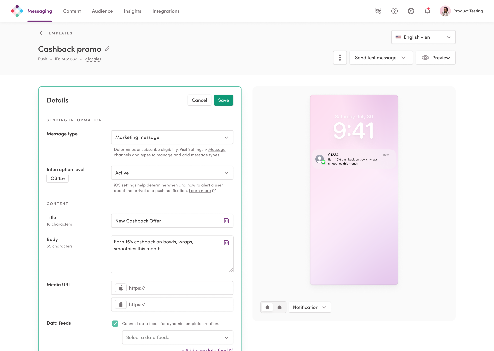

I’m a product design & UX research leader in Raleigh, NC, driving
clarity, craft, and culture in high-growth companies creating
intelligent products.
About
I’m currently working remotely as the head of design at
Iterable, a
marketing automation platform, where we help brands better communicate
with their customers. It’s an exciting space, with all sorts of
interesting challenges around AI, big data, and tools for creation. I
love getting to work with technology that’s human-centered, makes
people’s jobs easier, and amplifies their creative potential.
At Iterable, I’ve scaled the design team, built our research
and design systems practices, led complex AI and modernization efforts,
and helped shape a multi-year product vision.
Prior to that, I was the design director at
thoughtbot’s
Raleigh studio, where we built custom web and mobile applications for
our clients around the Southeast.
I’m a full-stack generalist with a bias for clarity, momentum, and
thoughtful systems. I care deeply about craft, continuous learning, and
building cultures where people feel empowered to do their best
work—especially in distributed environments.
“Christian is a seasoned leader who takes initiative before any is
requested. He has stepped into very ambiguous strategic conversations
with great confidence. Through his leadership and facilitation we are
able to come to critical clarity. I believe Christian is one of the
most thoughtful partners across the org when it comes to distilling
key components of strategic thought specific to our platform and in
collaboration across the org.”
“Christian helps me feel more confident and inspired to take
more risks in my work”
“Over the past year, Christian has done a uniquely impressive
job steering Iterable toward the future. He led our new design system
creation, spearheaded scaling our user research approach, led new
product concepts design sprints, championed product design principles.
He keeps the team aligned, cuts through ambiguity, approaches
challenges with a smile and kindness for everyone around him. He's a
secret weapon, and we're lucky to have him.”
“There are so many areas where I feel Christian truly excels in
his role, but the number one thing has to be his ability to empower
the people he manages. As director of product design, his ability to
empower the product design team is what has made all of the UI/UX
improvements possible and it's why we continue to see an influx of
customer compliments about our product's usability. His leadership and
genuine care for the people and products he oversees comes through in
every meeting and every decision he makes. Even through our current
turbulent times, where he's having to manage more than ever, he
continues to excel and pushes us all to be better each and every day.
Iterable is lucky to have Christian and I'm lucky I get to work with
and learn from him.”
“You are the most thoughtful and talented design leader I've
worked with yet—truly a design role model. Your ability to care deeply
about both the work and the people behind it is something I'll carry
forward. I'll be leaving with so many lessons from you—about craft,
leadership, and the impact of design at an organizational level.”
“Christian, your ability to lead, critique, design, and produce
is incredibly impressive. There is no doubt that you're at least 50%
of the success of the office.”
“Christian's superpower is his ability to genuinely listen to
ideas coming from other folks, and give them a fair shake-even if they
don't work out, or if he doesn't agree.
He's so good at making people feel seen and heard-not because it's
some kind of trick he's good at, but because he's genuinely interested
and curious in ideas that aren't his own.”
Shaping the Iterable Vision
Helping align leadership, inspire the company, and tell a bold story about the
future
of AI-powered marketing.
At a time when the industry was rapidly evolving and our teams were
navigating ambiguity, I led a cross-functional initiative to define
and articulate Iterable’s long-term product vision.
My goal was threefold:
Align executives around a unified, customer-centered future
Inspire the company and rally the team around a clear direction
Position Iterable as a strategic, AI-first partner in the eyes of the market

To do this, I assembled a working group that included our CEO, SVP
of Product Marketing & Partnerships, SVP of Engineering, and our
SVP (later VP) of Product. I partnered closely with a UX researcher
and a principal designer to explore bold ideas, test hypotheses, and
iterate rapidly through vision drafts. Our process was deeply
collaborative—with dozens of working sessions and ongoing
stakeholder reviews to build buy-in.
The centerpiece of the work was a live, in-browser interactive
prototype: a forward-looking concept experience that tied together
AI, automation, personalization, and scale. We demoed it at our
company’s fiscal year kickoff and later shared it publicly at
our customer conference with over 1,000 attendees.
One of my proudest moments was presenting the vision on-stage to the
entire company—followed by a live panel discussion alongside our
CEO, VP of Product, and SVP of Engineering.
All this drove a few key outcomes:
Influenced a reorg to dedicate R&D resources toward long-term strategic work
Drove alignment across product, engineering, and go-to-market teams
Increased employee sentiment around leadership vision by 19 percentage points
Sparked customer and market interest, including
press coverage
and ongoing conversations with strategic accounts
This project was a reminder of two of design’s greatest superpowers,
helping envision possible futures, and shaping what a company
believes.
Designing for AI
Making intelligence feel intuitive,
trustworthy, and deeply useful in real-world marketing workflows.
Predictive AI: One of our earliest AI features, Predictive Goals
helps marketers forecast how likely an individual is to convert on a
certain goal, allowing marketers to be more timely and relevant in
their messaging.
The idea was born during a design sprint I facilitated with data
scientists, product managers, engineers, and SMEs. We explored how
we could surface predictive insights in a way that felt actionable
and trustworthy. I led the MVP design and validated it with
customers, ensuring we struck the right balance between simplicity
and power.
The impact was significant: Redfin saw a 72% lift in converting
sellers to an active state, and BIG4 Holiday Parks reported a 156%
boost in conversions.
The feature has since evolved under my team’s guidance, and is now
core to how many of our customers plan their campaigns. It’s become
the foundation for how we bring predictive modeling into the hands
of everyday marketers.
Prescriptive AI:
Next Best Action identifies underperforming journeys and recommends
specific ways to re-engage audiences—turning AI insights into guided,
actionable steps.
As the primary design stakeholder, I focused on ensuring the
experience felt clear, useful, and seamlessly integrated into a
marketer’s workflow. I worked closely with the team to shape early
concepts, provide iterative feedback, and protect the bar for quality
through launch.
Iterable’s AI Suite is the cherry on top, offering Predictive Goals,
Next Best Action insights, and Send Time Optimization to engage the
right users at the perfect moment. Iterable is proof that
personalization isn’t just a buzzword; it’s the future—and it’s
already here.
Generative AI:
Journey Assist is the market’s first generative AI-powered journey
builder. It allows marketers to describe the experience they want to
create in plain language and generates a customizable journey map,
ready for refinement.
I served as executive sponsor for this project, helping ensure that
quality remained high from concept through launch. I supported the
team with regular design reviews, in-depth customer research, and
rich, high-fidelity prototyping.
This project was as much about how we worked as what we shipped—tight
feedback loops, collaboration between design and DSML, and a deep
focus on clarity and trust.
Iterable customers are seeing tangible ROI from Journey Assist,
including a 25% increase in conversions and a
10% boost in audience engagement. Customers like
Nextdoor and Cinemark have reported an average 15% reduction
in effort and substantial time savings when creating
complex customer journeys. This innovative tool enables the quick
implementation and iteration of new ideas, empowering marketing
teams to move beyond routine tasks and embrace strategic innovation
and creativity.
Modernizing Iterable's UX
A strategic redesign that refreshed our visual language,
strengthened our design system, and laid the foundation for
scalable, customer-centered innovation.
Designing a Modern Foundation for Growth:
As Iterable scaled to meet the needs of modern marketers, our
platform’s UI had started to show its age—visually inconsistent,
functionally fragmented, and increasingly difficult to evolve. We knew
it was time for a foundational transformation.
I led a company-wide modernization initiative, aligning design,
engineering, and product around a shared goal: evolve the product
experience without disrupting what customers already loved. We named
this effort Aurora, symbolizing a fresh start with clarity and warmth
at its core.


Balancing Familiarity with Progress:
Modernization isn’t just about aesthetics, it’s about creating a
coherent, resilient foundation for future innovation. We rebuilt the
UI from the ground up: introducing a new design system, refreshing the
visual language, improving accessibility, and reducing cognitive load
across key workflows. But we did it with care—making incremental
changes, validating decisions with customers, and preserving core
interaction patterns.
This approach minimized disruption while steadily raising the bar for
product quality.


Laying the Groundwork for the Future:
Aurora was a mindset shift. We invested in scalable systems and
patterns, enabling teams to build faster and more confidently.
Alongside the visual upgrade, we fostered stronger cross-functional
collaboration and raised internal expectations for craft.
Today, this modernization effort continues to fuel Iterable’s
evolution, shaping how we build, test, and design across the
platform. It’s been one of our most impactful and far-reaching design
initiatives, and one that continues to pay dividends.
Building a culture of trust
Creating environments where designers feel
safe to take risks, share ideas, and do their best work.
Great design happens when people feel safe to take risks, push
boundaries, and grow together. At Iterable, I cultivated a culture
rooted in trust and collaboration, enabling our team to thrive in a
fast-paced, distributed environment.
Our Product Design Team Charter reflects these shared principles:
communicate candidly, support each other, and raise the bar for
quality, all while staying kind and inclusive. This culture helped us
achieve a team engagement score of 100%, 21
percentage points above the company average.
Trust and excellence go hand in hand. I worked across product,
engineering, and customer teams to ensure design was seen as a
dependable, non-blocking partner. By facilitating collaboration and
creating clarity, I helped the team consistently deliver with
precision and creativity. Our focus on Clarity, Autonomy, Meaning,
Progress, and Social Inclusion ensured the team felt supported and
energized, even while holding ourselves to best-in-class standards.
This culture of trust shaped not just how we worked with each other
but also how we designed for our users. We led with empathy, deeply
understanding customer needs and challenges, while upholding a strong
sense of accountability to ship thoughtful, high-quality experiences.
Internally and externally, trust has been the cornerstone of raising
the bar for what design can achieve.